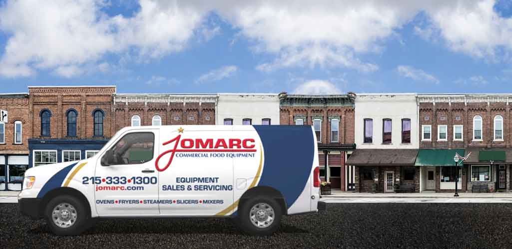

Expert service for all commercial food equipment brands
With over 30 years of experience, Jomarc provides comprehensive repair and maintenance services for commercial food equipment. We service a 60-mile radius around Northeast Philadelphia, covering the entire Philadelphia Metro Area and all of South Jersey—including all Jersey Shore points from Cape May, Wildwood, Ocean City, and Atlantic City to Long Beach Island, Manahawkin, and Barnegat Light.
Out of our service area? Ship your equipment to us for expert repair and refurbishment. We receive equipment from all 50 states, Canada, and Quebec.
Expert diagnosis and repair of all commercial food equipment including mixers, fryers, ranges, ovens, saws, booster heaters, food cutters, meat grinders, pizza ovens, steamers, and more. Fast turnaround times and quality workmanship guaranteed.
Equipment breakdown? We understand downtime costs money. Professional repair service for all fryers, ranges, ovens, saws, booster heaters, food cutters, meat grinders, pizza ovens, steamers, and more. We cover the Philadelphia Metro Area and all of South Jersey including Cape May and Atlantic Counties.
Regular maintenance extends equipment life and prevents costly breakdowns. Our maintenance programs keep your commercial equipment running at peak performance year-round.
Send us your equipment for complete refurbishment to factory condition. We restore mixers and other commercial equipment to like-new performance with warranty included. We receive equipment from all 50 states, Canada, and Quebec.
Quality replacement parts and accessories for all major equipment brands. Hobart-compatible agitators, bowls, attachments, and genuine replacement parts in stock.
Not sure what equipment you need? Our experts help you select the right commercial equipment for your operation, budget, and space requirements.
Contact us today for fast, professional equipment repair and maintenance
We proudly serve the Philadelphia metropolitan area and all of South Jersey, including:
Service Radius: 60 miles from our Northeast Philadelphia location

Our certified technicians are experienced in servicing all major commercial food equipment brands, with specialized expertise in Hobart equipment.
Authorized Service
Baking Equipment
Food Equipment
Commercial Equipment
Food Processors
Professional Equipment
Commercial Kitchen
All Major Brands